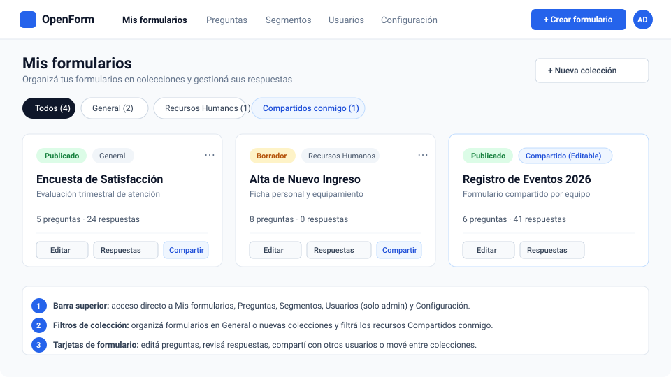
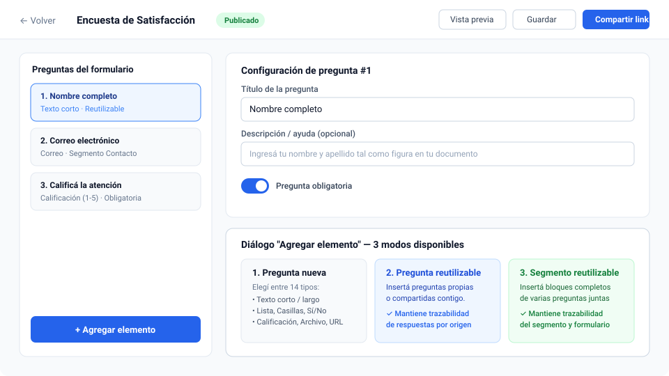
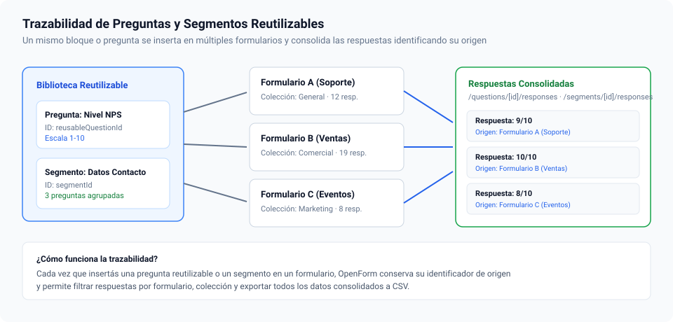
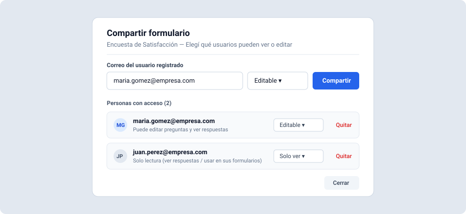
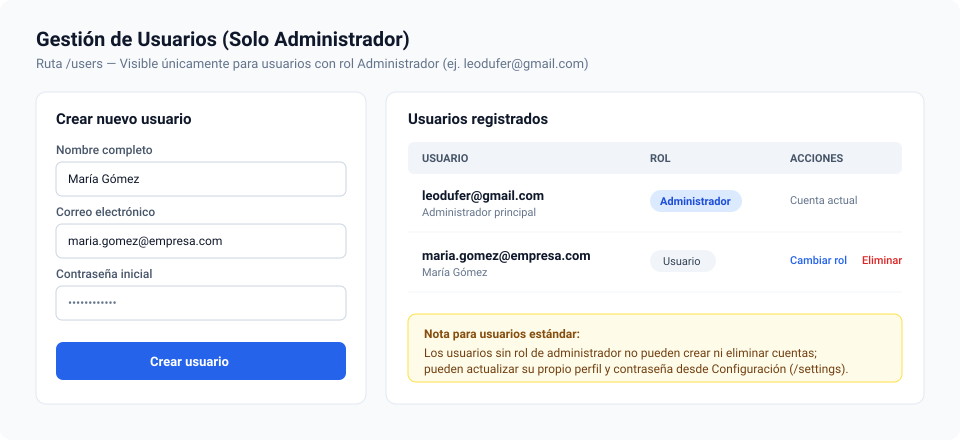

Manual de Documentación para el Usuario Final
Guía práctica paso a paso para crear formularios, organizarlos en colecciones, reutilizar preguntas y segmentos con trazabilidad de respuestas, compartir recursos y administrar usuarios en OpenForm.
1. Introducción e inicio de sesión
OpenForm es una plataforma web para diseñar formularios interactivos, recopilar respuestas y consolidar datos entre distintos formularios.
Cómo ingresar al sistema
- Abrí la aplicación en tu navegador e ingresá a la pantalla de acceso (
/login). - Ingresá tu correo electrónico y contraseña asignados.
- Una vez autenticado, el sistema te redirigirá automáticamente a Mis formularios
(
/dashboard).
2. Panel principal y colecciones
El panel principal (/dashboard) centraliza todos tus formularios y los que otros usuarios
compartieron contigo.

Organización por colecciones
- Colección "General": existe por defecto para agrupar los formularios iniciales.
- Crear colección: hacé clic en + Nueva colección, escribí un nombre (por ejemplo, Recursos Humanos o Comercial) y guardá.
- Filtrar: usá las píldoras superiores para ver Todos, una colección específica o Compartidos conmigo.
- Mover o administrar: desde el menú de cada tarjeta podés cambiar un formulario de colección, duplicar, editar, ver respuestas, compartir o eliminar.
3. Crear y editar formularios
Hacé clic en + Crear formulario (/forms/new) o en Editar sobre
un formulario existente (/forms/[id]/edit) para abrir el constructor.

Tipos de preguntas disponibles
Publicar y compartir el enlace público
- Agregá o reordená preguntas con el botón + Agregar elemento.
- Activá Vista previa para probar el recorrido del usuario antes de publicar.
- Cambiá el estado de Borrador a Publicado y guardá los cambios.
- Copiá el enlace público (
/f/[slug]) para enviarlo a quienes deban responder.
4. Preguntas reutilizables
En la sección Preguntas (/questions) podés crear una biblioteca de preguntas
estandarizadas para usarlas en múltiples formularios sin tener que reescribirlas.
- Ingresá a Preguntas y presioná + Nueva pregunta.
- Elegí el tipo de pregunta, título, descripción, opciones y si es obligatoria.
- Al editar cualquier formulario, abrí + Agregar elemento y seleccioná la pestaña Pregunta reutilizable para insertarla.
- En la tarjeta de cada pregunta reutilizable verás en qué formularios se utiliza y el total de respuestas acumuladas.
5. Segmentos de preguntas reutilizables
Los Segmentos (/segments) permiten agrupar varias preguntas relacionadas (por
ejemplo, Datos de contacto o Encuesta de satisfacción) en un bloque reutilizable.
- Edición en página completa: al crear (
/segments/new) o editar (/segments/[id]/edit) un segmento se abre un editor amplio de página completa. - Importar o crear preguntas: dentro del segmento podés crear preguntas nuevas o importar preguntas existentes desde tu biblioteca de Preguntas reutilizables.
- Inserción en formularios: desde el constructor de formularios, elegí + Agregar elemento → Segmento reutilizable para insertar todas las preguntas del bloque manteniendo su trazabilidad.
6. Trazabilidad y visualización de respuestas
Tanto los formularios como las preguntas reutilizables y segmentos ofrecen una vista completa de respuestas:

- Respuestas de un formulario: en
/forms/[id]/responsespodés consultar todas las respuestas recibidas y exportarlas a CSV. - Respuestas de una pregunta reutilizable: en
/questions/[id]/responsesse listan todas las respuestas obtenidas en todos los formularios donde se insertó esa pregunta, indicando explícitamente el formulario de origen y su colección. - Respuestas de un segmento: en
/segments/[id]/responsesse visualizan las respuestas consolidadas del bloque con filtro por formulario de origen.
7. Compartir formularios, preguntas y segmentos
Los propietarios pueden compartir sus formularios, preguntas reutilizables y segmentos con otros usuarios registrados en el sistema mediante el botón Compartir.

| Nivel de permiso | Qué puede hacer el usuario destinatario |
|---|---|
| Solo ver | Ver el formulario o recurso compartido, consultar sus respuestas e insertar preguntas/segmentos compartidos en sus propios formularios. |
| Editable | Todo lo anterior más editar el contenido y configuración del formulario, pregunta reutilizable o segmento compartido. |
En cualquier momento, el propietario puede cambiar el nivel de permiso o hacer clic en Quitar para revocar el acceso.
8. Configuración de cuenta y gestión de usuarios
Mi cuenta (/settings)
Todos los usuarios pueden acceder a Configuración para actualizar su información de perfil y cambiar su contraseña personal.
Gestión de usuarios (/users — Solo Administradores)

leodufer@gmail.com) pueden acceder a /users para crear nuevas cuentas con
correo y contraseña o administrar otros usuarios. Los usuarios estándar solo gestionan su propia cuenta en
/settings.
9. Licenciamiento y créditos
El uso y distribución de esta aplicación se rige por los términos establecidos en el archivo
EULA.txt ubicado en la raíz del proyecto.
- Proyecto base: desarrollado sobre la base del proyecto de código abierto
openform (
https://github.com/dabit3/openform), licenciado bajo los términos de la Licencia MIT. - Nuevas funcionalidades y sistema integrado: los derechos de propiedad intelectual y
distribución sobre las nuevas funcionalidades desarrolladas y el sistema integrado quedan reservados a su
creador conforme al acuerdo
EULA.txt.